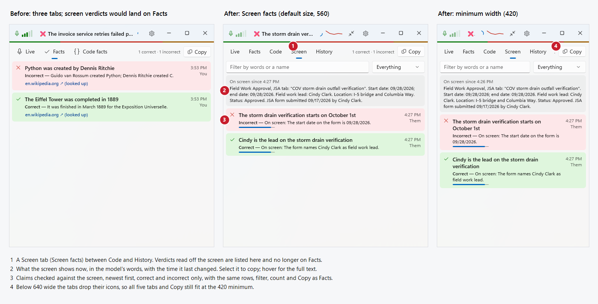

Screen facts
Debug build with --demo --facts (before, commit d345cf4) and --demo --screen (after, merged with the History, filter and call-mode changes, 2026-10-29), captured with PrintWindow. The numbered notes are under the picture.

- A Screen tab (Screen facts) between Code and History. Verdicts read off the screen are listed here and no longer on Facts.
- What the screen shows now, in the model's words, with the time it last changed. Select it to copy; hover for the full text.
- Claims checked against the screen, newest first, correct and incorrect only, with the same rows, filter, count and Copy as Facts.
- Below 640 wide the tabs drop their icons, so all five tabs and Copy still fit at the 420 minimum.